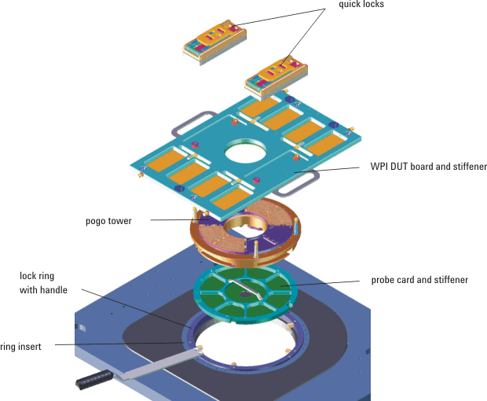

WPI overview and docking
The WPI (wafer prober interface) is available in 9.5 inch and 12 inch versions. Each version can accommodate a small WPI DUT board and stiffener or a large WPI DUT board and stiffener. The 9.5 inch WPI supports up to 512 pins with a small WPI DUT board, and up to 1024 pins with a large WPI DUT board. The 12 inch WPI supports up to 1024 pins with either the small or the large WPI DUT board.
On the Pin Scale system, 1024 digital pins are available on the small test head and 2048 digital pins are available on the large test head.
For wafer probers with manual probe card exchange, Advantest offers a lock ring to lock the pogo tower inside prober's ring insert. This lock ring (prober manufacturer's kit E2803D for 9.5" and E7018L for 12") is typically purchased by the prober company and assembled to the prober before delivery to the customer.
For automatic probe exchange, no lock ring is required.
The following figure shows the components of the WPI for manual probe exchange.

When the pogo tower is locked, it is pressed against the probe card. This establishes the electrical connection between the pogo tower's pogo pins and the probe card. It also holds the probe card in a fixed position in the ring insert.
The probe card stiffener reinforces the probe card to resist the forces exerted by the pogo pins of the pogo tower as well as the forces exerted by the chuck of the wafer prober.
Like the probe card, the WPI DUT board is planarized by a DUT board stiffener.
The probe card stiffener provides mechanical support to the probe card so it can resist the forces exerted on the card by the pogo pins in the pogo tower and the forces exerted by the chuck of the wafer prober.
The WPI DUT board also uses a stiffener to provide mechanical stability.
The probe card is supplied by the customer and not delivered with the test system. However, the outer dimensions of the probe card and pin locations are specified in the probe card drawings with the following drawing numbers:
- D-E7018-96550-1 or D-E7018-96560-1 for the 12 inch WPI
- D-E7018-96502-1 for the 9.5 inch WPI
For the drawings see Layout information: Probe cards.
To ensure sufficient stiffness, the thickness of the probe card should be at least 3.5 mm. The height of the probe card needles is usually between 2 mm and 8.3 mm. Check with your probe card supplier for the exact values.
Functional changes
- Introduced before SmarTest 6.3.2